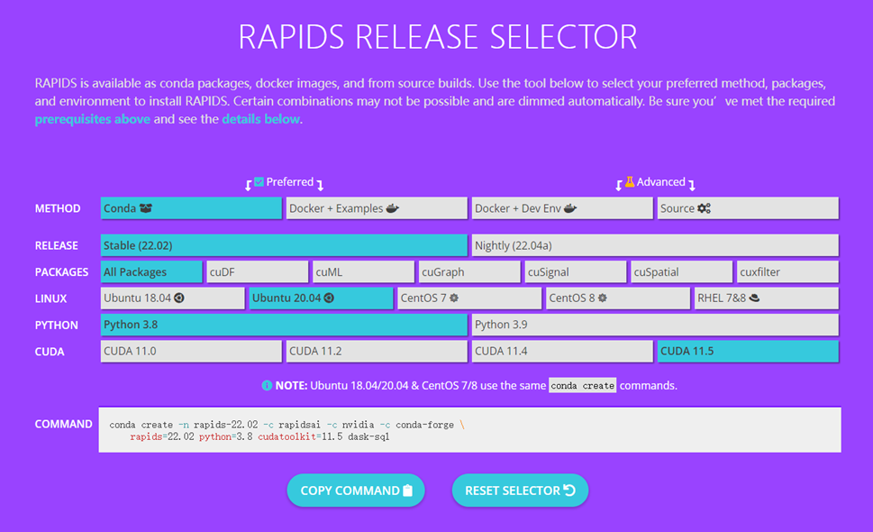

Towards huge datasets
The RAPIDS library from NVIDIA provides us the chance to accerlerate iMVP to an incredible level. The following guides will help you build it form the bottom. You need some patience before enjoying the high speed.
Configure an environment
Firstly, you should have a Linux system with a GPU supported by RAPIDS. If you have little knowledge about how to use GPU, you can check it step by step.
Firstly, check if you have installed the dependencies for your GPU (i.e., CUDA and cudnn), type nvidi-smi in your shell:
nvidi-smi
If you have nvidi toolkit installed, you will see something like this:
Tue Feb 22 19:24:16 2022
+-----------------------------------------------------------------------------+
| NVIDIA-SMI 495.29.05 Driver Version: 495.29.05 CUDA Version: 11.5 |
|-------------------------------+----------------------+----------------------+
| GPU Name Persistence-M| Bus-Id Disp.A | Volatile Uncorr. ECC |
| Fan Temp Perf Pwr:Usage/Cap| Memory-Usage | GPU-Util Compute M. |
| | | MIG M. |
|===============================+======================+======================|
| 0 NVIDIA GeForce ... Off | 00000000:02:00.0 Off | N/A |
| 27% 30C P8 2W / 260W | 51MiB / 11018MiB | 0% Default |
| | | N/A |
+-------------------------------+----------------------+----------------------+
+-----------------------------------------------------------------------------+
| Processes: |
| GPU GI CI PID Type Process name GPU Memory |
| ID ID Usage |
|=============================================================================|
| 0 N/A N/A 16111 G /usr/lib/xorg/Xorg 49MiB |
+-----------------------------------------------------------------------------+
Here, Driver Version: 495.29.05 is the version of your GPU driver, and CUDA Version: 11.5 is the version of CUDA. If they are not matched with RAPIDS, please visit https://developer.nvidia.com/cuda-toolkit for more information, or you can use the application manager of your system (e.g., apt of Ubuntu) to install one.
The you should check if cudnn is installed. The libraries should be found in the directory of CUDA, for example:
ls /usr/local/cuda-11.5/lib64/libcudnn*
If you don’t have cudnn, please visit https://developer.nvidia.com/cudnn for more information.
Install RAPIDS
Now you can install RAPIDS. Click SELECT RELEASE on https://rapids.ai/start.html. Then you will found a release selector for RAPIDS. Here, we suggest you to run with docker. In our hands: Docker + Examples -> Stable (22.02) -> Ubuntu 18.04 -> Python 3.8 -> CUDA 11.5. Then run the command lines given.
Tip
If you don’t have Docker, please install it first (https://docs.docker.com/get-docker/).
Dance with Jupyter-lab
We assumed you still survive. Here are some example codes for you to run Jupyter-lab with RAPIDS.
Here, we want to map our local folder, for example, docker_files to the container.
You can run the command lines:
docker run -v /path/to/docker_files:/rapids/notebooks/docker_files -it --gpus all -p 8888:8888 -p 6666:6666 -p 8786:8786 rapidsai/rapidsai-core:21.12-cuda11.5-runtime-ubuntu18.04-py3.8
Here, /path/to/docker_files:/rapids/docker_files is two paths splited by the :. /path/to/docker_files is the path we want to share with the container. And /rapids/notebooks/docker_files is the mapped directory you have in the container. -it is the parameter allow you to enter the container like a shell. --gpus all allows the container to use your GPU (might need some dependencies, see https://developer.nvidia.com/blog/nvidia-docker-gpu-server-application-deployment-made-easy/). -p 8888:8888 -p 6666:6666 -p 8786:8786 are the ports to map. rapidsai/rapidsai-core:21.12-cuda11.5-runtime-ubuntu18.04-py3.8 is the name of the container you installed.
Then you will enter a shell like this:
This container image and its contents are governed by the NVIDIA Deep Learning Container License.
By pulling and using the container, you accept the terms and conditions of this license:
https://developer.download.nvidia.com/licenses/NVIDIA_Deep_Learning_Container_License.pdf
A JupyterLab server has been started!
To access it, visit http://localhost:8888 on your host machine.
Ensure the following arguments were added to "docker run" to expose the JupyterLab server to your host machine:
-p 8888:8888 -p 8787:8787 -p 8786:8786
Make local folders visible by bind mounting to /rapids/notebooks/host
(rapids) root@dea9015824c8:/rapids/notebooks#
(rapids) root@dea9015824c8:/rapids/notebooks#ll
drwxrwxrwx 1 root root 4096 Feb 22 11:49 ./
drwxrwxrwx 1 root root 4096 Dec 17 20:51 ../
lrwxrwxrwx 1 root root 38 Dec 17 20:51 cudf -> repos/cudf/docs/cudf/source/user_guide/
lrwxrwxrwx 1 root root 23 Dec 17 20:51 cugraph -> repos/cugraph/notebooks/
lrwxrwxrwx 1 root root 20 Dec 17 20:51 cuml -> repos/cuml/notebooks/
lrwxrwxrwx 1 root root 24 Dec 17 20:51 cusignal -> repos/cusignal/notebooks/
lrwxrwxrwx 1 root root 15 Dec 17 20:51 cuspatial -> repos/cuspatial/
lrwxrwxrwx 1 root root 25 Dec 17 20:51 cuxfilter -> repos/cuxfilter/notebooks/
drwxr-xr-x 2 root root 4096 Feb 22 11:44 docker_files/
drwxrwxrwx 8 root root 4096 Dec 17 20:51 .git/
-rw-rw-rw- 1 root root 19 Dec 17 20:51 .gitignore
-rw-rw-rw- 1 root root 903 Dec 17 20:51 .gitmodules
-rw-rw-rw- 1 root root 11348 Dec 17 20:51 LICENSE
-rw-rw-r-- 1 root root 144823 Dec 17 20:43 NVIDIA_Deep_Learning_Container_License.pdf
-rw-rw-rw- 1 root root 1313 Dec 17 20:51 README.md
drwxrwxrwx 10 root root 4096 Dec 17 20:51 repos/
drwxrwxrwx 2 root root 4096 Dec 17 20:51 test/
-rwxrwxrwx 1 root root 88 Dec 17 20:51 update.sh*
lrwxrwxrwx 1 root root 23 Dec 17 20:51 xgboost -> repos/xgboost/notebooks/
To run the jupyter-lab, please type
bash /rapids/utils/start-jupyter.sh
To enter the notebook, you can type xxx.xxx.xxx.xxx:8888 in your browser, where xxx.xxx.xxx.xxx is the IP address of your sever.
Tip
Use ifconfig -a to check you IP in Ubuntu.
Tip
You can install iMVP_utils with pip in the container, but we suggest you to copy the codes from our notebooks directly. The interactive interface of iMVP is not supported in GPU accerleration.
Now, enjoy cuML!

Caution
Some packages, for example, the CPU version of HDBSCAN are not installed in the container. You should run the following command lines to enable them.
Caution
The files generated by the container belongs to root user. You require a permission to delete them outside the container.
Example:
apt-get update
apt-get install -y gcc
pip install hdbscan
Something else:
To exit the shell, please type exit or use CTRL+D. If you leave the container by accidence but it still alive, you can first type docker ps to find the id of the container. If you want to stop it, use docker stop <id> where <id> should be dea9015824c8 in this example. If you want to re-enter the container, please type docker attach <id>.
Benchmarking

Here we can find that, when runs with init="random", random_state=42, min_dist=0.01, n_neighbors=20 UMAP has a great improvement with cuML. But little improvement was found with HDBSCAN (parameters min_cluster_size=100, min_samples=100).
This difference might come from the algorithm themselves. HDBSCAN might be much heavier in computing the distances between data points, and hence runs slower with a GPU. We also don’t recommand using HDBSCAN with GPU, because HDBSCAN might consume huge memory above the ceil of the device, however, we might have much more memory in a CPU environment. Moreover, we now lacks some key functions in RAPIDS’s HDBSCAN implement, e.g., soft clustering and condensed tree drawing. So the best practices should be treate the data with GPU-based UMAP first, then turn to CPU-based HDBSCAN.